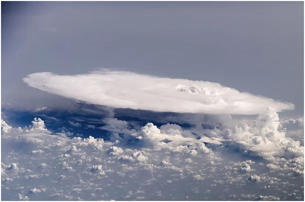
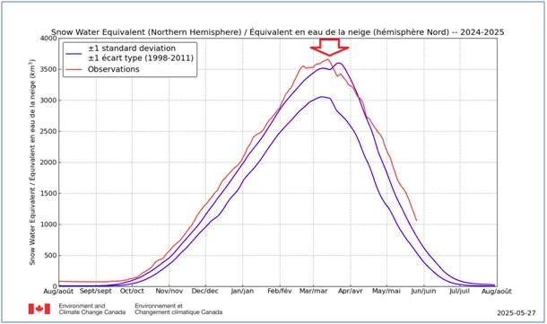
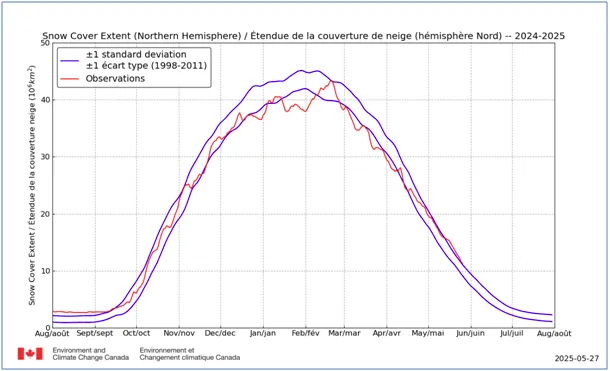
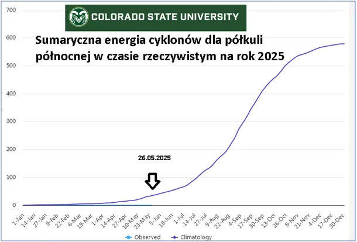

Czy maj 2025 będzie najcieplejszym majem tysiąclecia?
Zapewne znajdziemy wiele publikacji, że tak.
2025.05.27
Aż się boję ciągnąć temat, aby nie zostać ojcem globalnego oziębienia. Gdy w kwietniu 2020 publikowałem dane Ministra Zdrowia, że mamy mniej zgonów niż w latach poprzednich, sprawa była prosta, kto umiał czytać widział, skąd są codzienne dane o zgonach i nie było się nad czym zastanawiać, nie było żadnej epidemii.
"Globalne ocieplenie" to temat złożony, sfalsyfikowałem już kilkadziesiąt kłamliwych narracji, ale z powodu, że jest tak dużo wątków, temat od odbiorcy wymaga szerokiego spektrum. Główne wątki tego oszustwa omawiam w tym nagraniu: https://www.youtube.com/watch?v=g2m0f6MUAnc
Dziś, po bardzo chłodnym maju, wypatrujemy ciepłego czerwca , ale jeszcze przed tym uderzy w nas zimny front deszczowy. Co się dzieje?

Wykres pierwszy pokazuje, że wcześniej niż zwykle na północ dotarły ciepłe prądy i topnienie arktycznych śniegów rozpoczęło się wcześniej niż zwykle. Te prądy poczuliśmy w bardzo ciepłych początkach marca. Niestety, po kilku tygodniach proces topnienia Arktyki zwolnił z powodu braku ciepła z okolic zwrotnikowych. Pierwszy wykres pokazuje ilość wody uwięzionej w śniegu na północy, drugi zasięg pokrywy śnieżnej.

Proporcje mówią, że kolejny rok z rzędu grubość tej pokrywy jest większa i najpewniej nie stopnieje całkiem. Czyli mamy akumulację śniegu z lat ubiegłych. O tym jak ukrywany jest ten fakt przez proste wymazanie śniegu z wykresów nocą z ostatniego sierpnia na pierwszego września w latach ubiegłych pisałem tu: https://pawelklimczewski.pl/2024/08/15/cud-znikajacego-sniegu/

Kolejny aspekt globalnego bilansu termicznego to energia cyklonów, która jest miarą termiki oceanów. Jak pisałem od 30 lat energia ta maleje, co jest spójne z innymi obserwacjami świadczącymi o ujemnym bilansie energii słonecznej na naszej planecie. Obecnie jesteśmy na początku sezonu cyklonów na półkuli północnej bez żadnej aktywności tego typu. Trzeci wykres pokazuje, że jest to obecnie zero. Za kilka dni coś ma się zakręcić na Pacyfiku, na zachód od Meksyku, czekamy na inaugurację sezonu. Ale póki co planeta ma opóźnienie w termice.
Słońce zbliża się do Zwrotnika Raka, za 4 tygodnie zaświeci pionowo nad południowym Egiptem, a już nad Polską świeci pod kątem 60 stopni. W Hiszpanii i w Rosji już jest ciepło, a pomiędzy mamy ciągle powietrze dobrze chłodzone w Arktyce, spodziewajmy się gwałtownych zmian i dynamicznych zjawisk. Nadchodzi czerwiec, więc będą to zjawiska typowe i nie pozwólmy straszyć dzieci sensacjami z prasy, cytuję: "Ze wschodu pojawił się nowy rodzaj chmur, z których pada grad..." , takie to cuda w XXI wieku mamy...
Fot. Chmura Cumulonimbus widziana z przestrzeni kosmicznej, może mieć ponad 20 km wysokości i może zgromadzić ponad 10 milionów ton wody.
Paweł Klimczewski